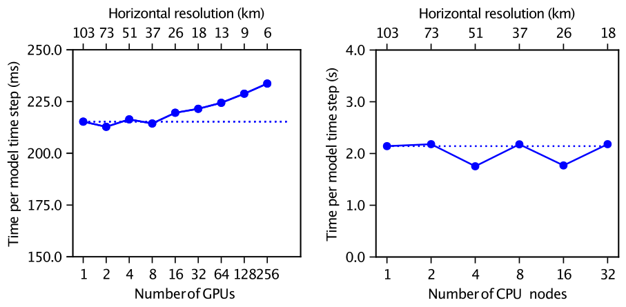
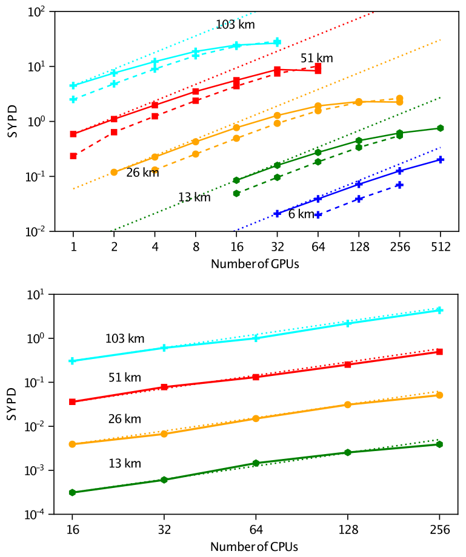

Performance and portability
ClimaCore runs one source on CPUs and on NVIDIA GPUs, on one process or many. This page describes how that portability is achieved, what the measured performance of the atmosphere built on it is, and where the costs are. The numbers are those of [2], measured with the CliMA atmosphere (ClimaAtmos) in its moist baroclinic-wave configuration with 43 vertical levels; they characterize the whole model, of which ClimaCore's operators are the dominant part. The portability design continues that of ClimateMachine, whose large-eddy simulations ran on GPUs and CPUs from one Julia source [3].
How portability is achieved
One kernel language. Model code is written as broadcast expressions over fields (Operators and broadcasting). On a CPU, a fused expression compiles to a loop; when the fields live on a ClimaComms.CUDADevice, the same expression compiles to a CUDA kernel through the ClimaCoreCUDAExt package extension, which loads when CUDA.jl is present. Every kernel assigns one thread per nodal point. Finite-difference kernels give a column to a group of threads along its levels; spectral-element kernels give each element slab a group of threads, one per node, pack several slabs into a thread block, and stage the slab in shared memory for the differentiation matrix. Kernels are specialized on the polynomial degree, so the loops over quadrature nodes unroll.
Device-agnostic data. A field's storage is an array whose type follows the device (Array or CuArray), and every grid, space, and operator is Adapt-able, so a model state moves between devices with ClimaCore.to_device. Halo exchanges for DSS and for DG face fluxes go through ClimaComms, which dispatches on the context type: a no-op on one process, MPI messages on many, GPU-aware where the MPI library supports it.
Memory layout. Field data is stored in one of the DataLayouts: VIJFH orders vertical level, the two horizontal node indices, the components of the value type, and the element index from fastest to slowest; VIJHF swaps the last two. The choice is a type parameter of the space (VIJH keyword), and the horizontal element index is the slowest so that one element is contiguous in memory. Elements are ordered along a space-filling curve (Topologies.spacefillingcurve) so that spatial neighbors are memory neighbors [38].
Precision. Every grid and field is parameterized on its float type; Float32 and Float64 runs use the same code. In the atmosphere's year-long conservation test, the relative drift of dry mass and total water is of order 10⁻¹³ in Float64 and 10⁻⁴ in Float32 [2].
Measured throughput and scaling
Hardware in the measurements: NCAR's Derecho (four NVIDIA A100 GPUs per node), Google Cloud Platform NVIDIA H100 instances, and Caltech's Resnick cluster (two 32-core Intel Icelake CPUs per node, 16 MPI ranks per node).
| Quantity | Result |
|---|---|
| Weak scaling, 103 km → 6 km, 1 → 256 GPUs | Efficiency above 92% on GPUs; time per step stays near the 1-GPU value of 223 ms |
| Weak scaling on CPUs, 16 → 512 ranks | Efficiency above 98% |
| Strong scaling on GPUs | Efficiency above 95% while each GPU holds at least about 5400 spectral elements |
| Strong scaling on CPUs | About 80% at the highest resolution, up to 16 nodes |
| Throughput at 25–50 km | More than 1 simulated year per day on a dozen to a few dozen GPUs |
| Throughput at 6 km, 256 H100 GPUs | 0.20 simulated years per day, with one-moment microphysics |
| Time per step at 51 km on 4 A100 GPUs | About 0.22 s |

Weak scaling: time per model step as the resolution is refined from 103 km to 6 km while the number of GPUs (left) or CPU nodes (right, 16 ranks per node) doubles at each step. The dotted line is the single-device time. From [2].

Strong scaling: simulated years per day at fixed resolution against the number of GPUs (top; solid lines GCP H100, dashed lines Derecho A100, dotted lines ideal) and CPUs (bottom). From [2].
The runs behind these figures are ClimaAtmos configurations; the scripts that launch the scaling sweeps and draw the plots live in the ClimaAtmos repository: post_processing/plot_gpu_weak_scaling.jl, post_processing/plot_gpu_strong_scaling.jl, post_processing/plot_scaling_results.jl, with the shared helpers in post_processing/plot_gpu_scaling_utils.jl and the strong-scaling configuration config/gpu_configs/gpu_aquaplanet_dyamond_ss.yml. The moist baroclinic-wave benchmark itself is config/longrun_configs/longrun_moist_baroclinic_wave_he60.yml and its dry counterpart in the same directory.
For context, the same paper compares against two other GPU dynamical cores: SCREAM (C++/Kokkos) reports 0.52 simulated years per day at 3.25 km on 1536 A100 GPUs [39], which after accounting for the roughly eightfold cost of halving the resolution is a comparable throughput per GPU, and Pace (Python) reports 3.98 s per step at about 50 km on 6 P100 GPUs [40]. H100 instances give the higher throughput at small GPU counts; Derecho's interconnect gives the better scaling efficiency, so several A100s match or exceed the H100 instances at high GPU counts. The point of the cloud measurements is access: a few dozen cloud GPUs run a global simulation at 25–50 km resolution faster than real time, without a supercomputer allocation.
Where the time goes
DSS is the only horizontal communication in a CG model and one of two exchanges (with the DG halo) in a DG model; everything else is element- or column-local. The vertical implicit solve is column-local and needs no communication. At fixed resolution, the per-step cost is dominated by kernel execution when each GPU holds thousands of elements and by launch and exchange latency when it holds few, which is the knee in the strong-scaling curves. Over-aggressive fusion of a long tendency into one kernel spills registers or exhausts shared memory and slows the kernel; the split points are chosen by measurement.
Four environment variables tune the GPU kernel launches; the Environment variables page lists them, and perf/sweep_kernel_configs.jl sweeps them. For writing new code that keeps these properties (no allocation in kernels, type stability, ifelse over branches), see the shared developer guides under docs/dev-guides/performance/.